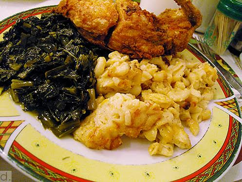

Cheesy Baked Mac & Cheese
Ingredients
- 1 (3 pound) whole chicken, cut into pieces
- 1 cup all-purpose flour
- salt to taste
- ground black pepper to taste
- garlic powder
- onion powder
- seasoning salt
- 1 teaspoon cayenne pepper
- 3 eggs
- hot sauce
- 1 quart vegetable oil for frying
- 2 Cups milk
- 2 teaspoons butter
- 2 tablespoons all-purpose flour
- 1/2 teaspoons salt
- 1/4 teaspoons freshly ground pepper
- 1(10-oz) block extra sharp chedder cheese, shredded
- 1/4 teaspoon ground red pepper (optinal)
- 1/2 (16-oz.) package elbow macaroni, cooked

Macaroni & Cheese Recipe
- Preheat oven to 400°. Microwave milk at HIGH for 1 1/2 minutes. Melt butter in a large skillet or Dutch oven over medium-low heat; whisk in flour until smooth. Cook, whisking constantly, 1 minute.
- Gradually whisk in warm milk, and cook, whisking constantly, 5 minutes or until thickened.
- Whisk in salt, black pepper, 1 cup shredded cheese, and, if desired, red pepper until smooth; stir in pasta. Spoon pasta mixture into a lightly greased 2-qt. baking dish; top with remaining cheese. Bake at 400° for 20 minutes or until golden and bubbly.
Fried Chicken Recipe
- Season chicken pieces with salt, pepper, garlic powder, onion powder, season salt, and cayenne pepper
- Marinate seasoned chicken in hot sauce
- Preheat your oil, in either a heavy pan on the stove or a deep-fryer, to 325 degrees F.
- Crack eggs into a bowl large enough for the chicken to be dipped in the eggs.
- Prepare your dredging station. Place your chicken in a bowl. Next to that, your bowl of eggs, and next to that, your flour.
- Take your chicken pieces, lightly dust them with flour, then dip them in the eggs until they are coated, and then place them in the flour mixture.
- Place chicken pieces in hot oil. Cover, and fry until golden, turning once, 15 to 20 minutes. Drain on paper towels.
Collard Greens Recipe
- Heat oil in a large pot over medium-high heat. Add beacon, and cook until crisp. Remove beacon from pan, crumble and return to the pan.
- Pour in chicken broth, and season with salt, pepper, and red pepper flakes Reduce heat to low, cover, and simmer for 45 mintues, or until greens are tender.